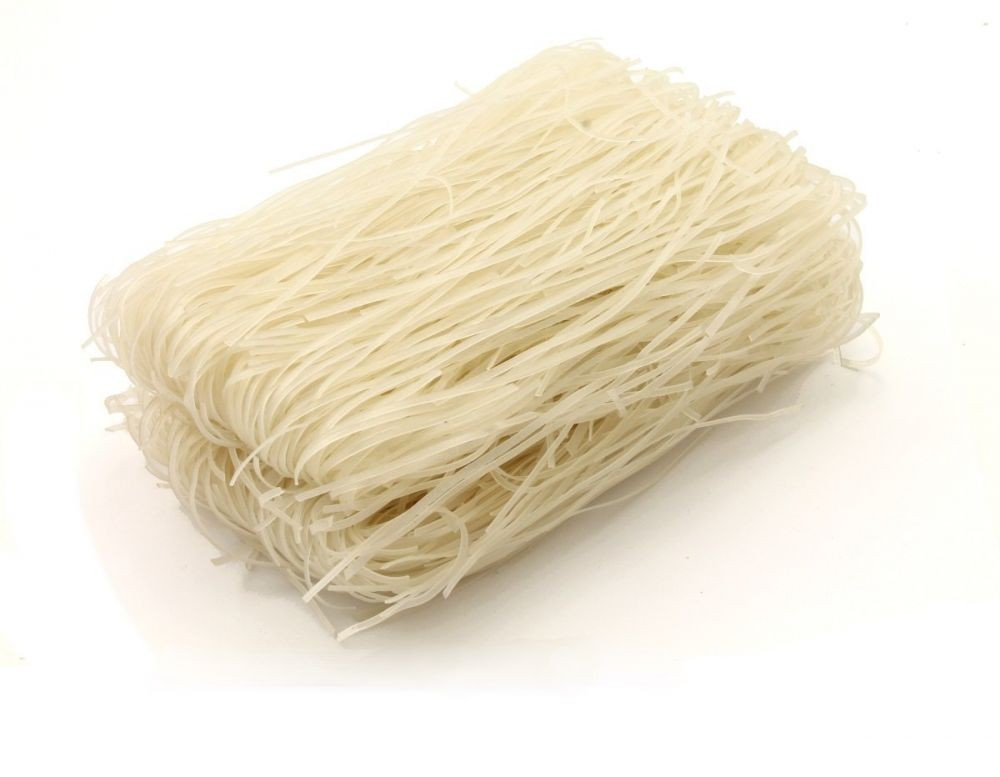

 Sohun atau soun (suun) adalah mi halus yang dibuat dari pati. Setelah direbus atau direndam, sohun berwarna bening, bertekstur kenyal, dan memiliki permukaan yang licin. Di antara berbagai jenis pati yang bisa dijadikan bahan baku adalah pati kacang hijau, umbi (kentang, ubi jalar, tapioka), sagu, aren, dan midro (ganyong). Sohun berbeda dari bihun. Dijual dalam keadaan kering dan terlipat seperti sarang burung, sohun direbus atau direndam hingga agak lunak sebelum digunakan untuk berbagai masakan tumis dan sup. Sohun hampir-hampir tidak memiliki rasa, namun menyerap kaldu dan rasa bahan-bahan lain yang dimasak bersamanya. Tanpa direndam air lebih dulu, sohun bisa langsung digoreng hingga garing, dan dipakai sebagai alas atau penghias makanan.